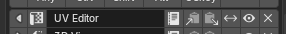

Settings¶
Settings は、Pie Menu Editor 全体の挙動を調整する設定画面です。Edit > Preferences > Add-ons から Pie Menu Editor を開き、画面上部の Editor / Settings タブの Settings 側で表示されます。
左側のタブで 10 枚に分かれています。上の 5 タブが全体に効く設定、中央の 4 タブが各エディター固有のデフォルト、最下段が開発者向けです。
General¶
PME 全体の使い勝手に関わる設定をまとめたタブです。エディター画面の見た目、メニューリストの幅・行数、自動バックアップやタグの自動付与、上級者向けトグルがここに集まります。各エディター固有のデフォルトは、後続のエディター別タブで設定します。
インターフェース
N-Panel Preferences¶
3D View の N-Panel に PME の設定を表示するかを切り替えます。有効にすると、3D View の N-Panel 内に PME タブが追加され、Preferences ウィンドウを開かなくても主要な設定にアクセスできます。
Expand Slot Tools¶
スロットエディタを開いたときに、コピー・削除・移動などのスロットツール群を最初から展開して並べるかを切り替えます。
{kind=link}

Operator Editor¶
Command タブで Operator Properties Editor（Blender の F6 / Adjust Last Operation と同等の入力 UI）を使うかを切り替えます。Off にすると、Blender の汎用フィールド入力にフォールバックします。
Persist Tree State¶
メニュー一覧のツリー表示で、展開/折りたたみの状態を Blender 終了後も保存するかを切り替えます。
Show Tree Group Counts¶
ツリー表示のグループ行（タグごとの見出しなど）に、含まれるメニュー数を表示するかを切り替えます。
List Width¶
エディター画面左側のメニューリストの幅（%）を指定します。範囲は 1〜80、デフォルトは 40。
List Rows¶
メニューリストに表示する行数を指定します。範囲は 5〜50、デフォルトは 10。
Search Keywords¶
メニューの Search / Select 機能で、メニュー名以外に検索対象に含めるトークンを選びます。以下から複数選択できます。
Hotkey — メニューに割り当てた hotkey 文字列（例:
Ctrl+Shift+A）Extend Target — Extend Panel / Extend Menu の差し込み先クラス ID（例:
VIEW3D_MT_object）UID — PME 内部の uid 文字列
デフォルトは Hotkey のみ。
自動化
Auto Backup¶
メニューを編集して保存するたびに、自動でバックアップを取るかを切り替えます。Resources タブの保存先パス配下にタイムスタンプ付きで蓄積されます。バックアップを 1 ファイルに上書きしたい場合は Overwrite Backup File を使います。
Cache Scripts¶
Custom / Command スロットから読み込む外部 Python スクリプトをキャッシュするかを切り替えます。同じスクリプトを繰り返し評価するメニューで起動コストを下げます。
Expert
Show Error Trace¶
スロットの Python 式（Description / Poll / Custom / Command）で例外が出たときに、トレース情報を表示するかを切り替えます。
Show Command Tab Undo¶
Command タブに Undo Previous Command チェックボックスを表示するかを切り替えます。詳細は Macro Operator Editor と Stack Key Editor を参照してください。
Preserve Side Area State¶
Toggle Side Areaで対応するエディターを閉じた後や、別のエディターへ切り替えて戻った後も、そのエディターの作業状態を現在のBlenderセッション中に保持します。Outlinerの検索・表示・フィルター、Propertiesのコンテキスト、Node EditorのノードツリーやSidebar表示に加え、Blender 5.2ではText Editorの開いていたText、スクロール位置、表示・検索設定と、Dope Sheet / Timeline / Actionのモード、フィルター、チャンネル選択、表示位置などを戻します。F-Curve / Driversでも、同じエディター履歴、モード、フィルター、表示設定、カーソル・ピボット、対応する表示位置を復元します。NLA Editorでは表示、フィルター、対応する表示位置、Consoleではコマンド履歴、スクロールバック、行カーソル・種類、フォントサイズを復元します。Spreadsheetではpin flag、Mesh用の表示・フィルター設定、row filterを復元します。Video Sequence Editorでは、検証済みのTimeline、Preview Image、Combined Histogramの表示・overlay・cursor設定と、表示中のtimeline / preview位置を復元します。Movie Clip Editorでは、検証済みのClip、Graph、Dope Sheet viewの直接設定と、表示中のclip / preview位置を復元します。Image Editor / UV Editorでは、生成画像のpin、モード、cursor、pivot、overlay、UV、scope表示、zoomの設定と、表示中のWindow位置を復元します。Preferencesでは、Display Filterの検索文字列とNavigation領域の表示状態を復元します。初期状態はOFFです。
警告
このExpert設定はBlender内部の仕組みを利用するため、Blenderが不安定になる場合があります。
Blender 4.5.xから5.2.xに対応し、操作のたびに実行中のBlenderが持つエリアとエディター履歴の構造を確認します。2026年8月10日時点の公式Windows x64版19リリース（4.5.0〜4.5.12、5.0.0〜5.0.1、5.1.0〜5.1.2、5.2.0）で、Outliner、Properties、Node Editorの開閉と復元を確認しています。Text Editor、Dope Sheet / Timeline / Action、F-Curve / Drivers、NLA Editor、Console、Spreadsheet、Video Sequence Editor、Movie Clip Editor、Image Editor / UV Editor、Preferencesの追加対応は、Windows版Blender 5.2.0 build fbe6228777e7で確認しました。特定のbuild hashだけに機能を制限する方式ではありません。
Pencil+ 4 Line 4.1.8を使ったBlender 5.1.1での確認では、Pcl4 Node EditorのPencil+ 4 Lineタブを最初に1回選んだ後、Propertiesへの切り替え、サイドエリアのクローズ、Pcl4の再オープンを行っても、追加のタブ操作なしにPcl4のパネルが再表示され、同じノードツリーとPropertiesのSceneコンテキストが戻りました。Pcl4専用の処理はなく、この確認は一般的なNode Editor履歴の実例です。すべてのSidebarタブを一般に記憶・復元する保証ではありません。
同じメインエリアでは、対応するエディターの基本種類ごとに1つの作業状態を保持します。Node Editorの各サブタイプが別々の履歴を持つわけではなく、Dope Sheet / Timeline / Actionも1つの基本種類を共有し、F-Curve / Driversも別の1つの基本種類を共有します。Movie Clip EditorのClip / Graph / Dope Sheet viewも1つの基本種類を共有し、Image Editor / UV Editorも1つのSpaceImage履歴を共有します。Blender 5.2では、PMEが追跡・検証できるL字レイアウトの部分的なCLOSEで、要求したtargetだけを閉じ、Mainと追跡中のすべてのnon-target Side Areaを同じArea、active Space、Space membership、Region、エディターの作業状態のまま維持します。Preserve Side Area State のON/OFFは、このsurvivorの扱いを選びません。ONで対応targetのexact state返却条件が成立した場合だけ、そのtargetの状態をMainへ返します。この操作は直交するAsset BrowserやText Editorを閉じたり作り直したりしません。さらにBlender 5.2では、Text Editor、Dope Sheet、Timeline、Action、F-Curve、Drivers、NLA Editor、Console、Spreadsheet、Video Sequence Editor、Movie Clip Editor、Image Editor / UV Editor、Preferences自身をtargetとして閉じて後で開き直した場合も、同じエディター履歴を復元します。Dope Sheetを閉じた後に一時的なTimelineを開いても、保存済みのDope Sheet履歴は置き換えません。F-Curveを閉じた後に一時的なDriversを開いても、保存済みのF-Curve履歴は置き換えません。Image Editorを閉じた後に一時的なUV Editorを開いても、保存済みのImage履歴は置き換えません。Asset Browser自体のexact state保存はまだ対象外です。
Blender 4.5/5.0/5.1の部分的なCLOSE、Blender 5.1でexact stateを移動する場合、または現在のFile Browser / Asset Browserから切り替える場合は、既存の物理的なエリア置換を使います。後から別方向のサイドエリアを開いたため対象がメインエリアと完全な辺を共有しなくなった物理置換では、この設定に関係なく、生き残るサイドエリアを一時的に閉じ、対象を閉じるか置き換えた後に元のside、順序、side方向の大きさ、エディター種類、表示状態で作り直します。この設定がONでexact stateの保持条件も成立する場合だけ、同じSpace / Regionの作業状態を追加で復元します。設定がOFFの場合、File Browser / Asset Browser、対応外の種類、同じ基本種類の履歴競合、または安全にexact復元できない場合も、通常のレイアウト再構成は継続し、exact working stateだけを復元しません。File BrowserとAsset Browser自体の作業状態、全RNAプロパティ、操作中のモーダル状態、描画・実行時キャッシュ、Spreadsheetのtable・実際の表示行、SequencerのRegion alignment・combined divider geometry・media/job/cache状態・Channels Regionのraw View2D Y、Movie Clipのview別履歴・cross-view viewport・tracking/solve/prefetch/proxy job・modal・scope/runtime cache、Image / UVの別履歴・cross-mode viewport・inactive Region proxy・ui_mode・Render Result / file / viewer image・paint / mask / modal / job・computed scopes / cache、Preferencesで選択中のカテゴリ・派生検索結果・Extensions / Add-ons処理・表示位置・操作中のfile selector、任意の既存workspace、MainとSideが同じ基本種類の組み合わせ、ファイル読み込み、アドオン再読み込み、Blender再起動を越える保持は保証しません。今回のBlender 5.2追加対応はBlender 4.5/5.0/5.1には適用されません。
Resources¶
PME がメニュー以外のユーザーデータ（カスタムアイコン、Export 済み JSON、Custom スロットから参照する外部スクリプト、自動バックアップ）を保存する場所を指定するタブです。ここで設定したフォルダ配下に PME がサブディレクトリ（icons / scripts / exports / backups）を作り、それぞれの種類のリソースを格納します。
PME 2.0.0 以降は、これらのリソースをアドオン本体のフォルダから分離して、ユーザーリソースとして扱うようになりました。アドオンを再インストール / アップデートしても、ここに置いたデータは消えません。
Open Resource Folder¶
現在のリソースルートディレクトリを OS のファイルブラウザで開きます。フォルダがまだ存在しない場合は、自動的に作成されます。
Root Directory¶
ユーザーリソースの保存先ルートディレクトリです。デフォルトは ~/Documents/Pie Menu Editor/ 配下。任意のフォルダに変更でき、空欄にすると直近の有効パスに戻ります。
ステータス行には、現在の scripts / exports / icons / backup の数が表示されます。サブフォルダが欠けている場合は、行の右側に Missing resource folders が表示され、リロードボタン（）で初期化できます。
Hotkeys¶
PME 自体のホットキーと、共通的なキー入力タイミングをまとめたタブです。PME を初めて開くときの起動 hotkey、Widget Context Menu の hotkey、HOLD / CHORD / TWEAK の判定時間や距離をここで設定します。Keymap Doctor から、現在有効な Blender キーマップとの競合も確認できます。
PME Hotkey¶
PME のメニュー編集画面（Pie Menu Editor / Regular Menu Editor などのエディター集）を開くためのホットキーです。Blender のキーマップとは独立して動きます。割り当てたキーは、3D View / Properties / Image Editor などほぼ全エリアから利用できます。
Tweak Mode Threshold¶
Blender 全体の ドラッグ判定距離（ピクセル）です。マウスをこのピクセル数以上動かすと、PME 側でも「ドラッグ」とみなして TWEAK / CLICK_DRAG モードに切り替わります。Blender 標準の Tweak Mode Threshold と同じ値を共有しています。
Hold Mode Timeout¶
HOLD モードの判定時間（ミリ秒）です。キーを押してからこの時間を超えると HOLD 扱いになります。範囲は 50〜1000、デフォルトは 200。
Chord Mode Timeout¶
CHORD モードの判定時間（ミリ秒）です。最初のキーを押してからこの時間以内に次のキーを入力すると、CHORD として連続入力が成立します。範囲は 50〜1000、デフォルトは 300。
Show Next Key Chord¶
CHORD 入力中に、次に押せるキーをヒントとして画面に表示するかを切り替えます。
Experimental Modes¶
Hotkey 設定の Open Mode に、Click / Click Drag などの実験的なモードを表示するかを切り替えます。標準では非表示です。
関連: Hotkey 設定
Keymap Doctor¶
Scan Keymaps は、各 PME Hotkey を現在有効な Blender の user keymap と比較し、同じキーマップ内の競合を表示します。あわせて、空の PME キーマップ項目、active layer に焼き付いた可能性がある PME 項目、判定を完了できなかった Hotkey も確認できます。
異なる Hotkey Mode、異なる CHORD、mouse modifier など、PME の dispatcher が意図どおり振り分ける組み合わせは競合件数に含めず、情報として区別します。同じ Hotkey Mode や同じ CHORD の重複、余分な ghost 項目は競合として残ります。
スキャン、概要のコピー、レポートの出力はキーマップを変更しません。Clean Up Empty Items が削除するのは、空だと確認できた PME 項目だけです。競合項目は自動的に変更・削除されません。
Overlay¶
メニュー実行中に画面上に重ねて表示するオーバーレイ（Stack Key の現在スロット名、Modal Operator の操作ガイド、各種ヒントメッセージ）の見た目を調整するタブです。文字サイズ、色、位置、フェード時間をまとめて設定します。
Font Size¶
オーバーレイ全体のフォントサイズ（ピクセル）です。範囲は 10〜50、デフォルトは 24。Stack Key や Modal Operator のラベルに使用されます。
Text Color¶
オーバーレイの主テキスト色です。RGBA で指定。Stack Key のスロット名や Modal Operator の現在モードに使われます。
Secondary¶
サブテキストの色です。RGBA で指定。Stack Key の補助テキスト、Modal の値表示などに使われます。
Background¶
オーバーレイの背景色です。RGBA で指定。Use Background が有効なときだけ描画に使われます。
Use Background¶
テキストの背景パネルを描画するかを切り替えます。
Use Shadow¶
テキストにドロップシャドウを乗せるかを切り替えます。デフォルトで有効です。
Alignment¶
オーバーレイの画面内アラインメント（上 / 中央 / 下 など）を指定します。
Offset X¶
画面端からの横方向オフセット（ピクセル）です。
Offset Y¶
画面端からの縦方向オフセット（ピクセル）です。
Duration¶
オーバーレイの表示時間（秒）です。範囲は 1〜10、デフォルトは 2。
GPU Layout¶
PME 2.0.0 で導入した独自描画レイヤ（Floating Panel や FPANEL 系の UI）の挙動を調整するタブです。tooltip の最大幅、INVOKE オペレーターの優先戦略、デバッグ用トグルなどがここに集まります。
Tooltip Max Width¶
GPULayout の tooltip テキストの最大幅（unscaled ピクセル）です。範囲は 160〜1200、デフォルトは 420。
Invoke Priority¶
オペレーターが INVOKE モードで呼ばれ、明示的な invoke_strategy 指定がないときの既定戦略を選びます。
Suspend —
INVOKE_SUSPEND（パネルを生かしたまま）を優先。Afterfunc —
INVOKE_AFTERFUNC（閉じる → invoke → 再オープン）を優先。
Force INVOKE_AFTERFUNC Operators¶
INVOKE_AFTERFUNC を必ず使う対象のオペレーター ID 列です。bpy.ops.foo.bar のような ID を、カンマ・スペース・改行のいずれかで区切って並べます。
Force INVOKE_SUSPEND Operators¶
INVOKE_SUSPEND を必ず使う対象のオペレーター ID 列です。指定形式は上と同じ。
Debug Toggle Keys¶
Floating Panel 上で、開発用のキー入力（D = HitTest debug、V = Visible/Culling debug、M = Metrics debug）を受け付けるかを切り替えます。
Sync FPANEL to DIALOG¶
Floating Panel と並べて、レイアウト比較用の DIALOG コピーを開くかを切り替えます。GPULayout の見た目検証用です。
Show Unsupported FPANEL UI¶
Floating Panel 内で、まだ Blender の UILayout 経由で描画している（GPULayout 未対応の）開発用 UI を表示するかを切り替えます。デバッグ目的の項目です。
Layout Panel Header Spacing¶
UILayout.panel() のヘッダーレイアウトを使ったとき、ヘッダーとボディの間に上スペースを足すかを切り替えます。Show Unsupported FPANEL UI を有効にすると現れます。
Force Separator Line¶
AUTO セパレータを「線として描画」するか、「スペース確保のみ」にするかを切り替えます。
Popup Dialog¶
Pop-up Dialog の既定値をまとめたタブです。Spacer の扱い、ジャンプボタンの表示、新規ダイアログの初期モード、Toolbar モードの最大サイズがここで決まります。
Use ‘Spacer’ Separator by Default¶
空スロット（中身が空のスロット）を、デフォルトで Spacer（柔軟な余白）として扱うかを切り替えます。Off の場合は固定幅のセパレータになります。
Default Mode¶
新規 Pop-up Dialog の既定モードを Pie Mode / Popup Mode から選びます。
Max Width (Toolbars)¶
縦型 Toolbar モードの最大幅（ピクセル）です。デフォルトは 60。
Max Height (Toolbars)¶
横型 Toolbar モードの最大高さ（ピクセル）です。デフォルトは 60。
Modal Operator¶
Modal Operator のマウス動作と、各プロパティ型ごとの「動かしたときの単位」をまとめたタブです。マウスをどの方向にどれだけ動かすと値がどれだけ変わるか、ここで全エディター共通の既定が決まります。個別の Modal Operator 側で上書きしたい場合は、その Modal の詳細設定で同じ値を設定できます。
Mouse Movement Direction¶
マウスをどの方向に動かしたときに値を変えるかを選びます（縦 / 横 / 距離 など）。Modal Operator 全体に影響します。
Mouse Threshold (Int)¶
INT プロパティで、値を 1 変えるのに必要なマウス移動量（ピクセル）です。小さくすると敏感に、大きくすると粗くなります。
Mouse Threshold (Float)¶
FLOAT プロパティの同上です。プロパティの step 値に対する 1 単位分のマウス移動量を指定します。
Mouse Threshold (Bool)¶
BOOL プロパティのトグルしきい値です。左にあるトグルで「BOOL に対してもしきい値を使うか」を切り替え、その状態でフィールドが有効になります。
Mouse Threshold (Enum)¶
ENUM プロパティの項目切替しきい値です。左にあるトグルで「ENUM に対してもしきい値を使うか」を切り替え、その状態でフィールドが有効になります。
Developer¶
開発・診断向けの設定です。普段の編集では使いません。Boot Config（起動オプション）、Logger（ログ）、Backup / Export 用の開発フラグがここに集まります。
Boot Config
Open Boot Config Folder¶
Boot Config が保存されているフォルダを OS のファイルブラウザで開きます。
Enable import pme Alias¶
sys.modules['pme'] を登録するかを切り替えます。外部スクリプトやアドオンから import pme で PME の公開 API にアクセスしたいときに有効化します。次回起動から反映されます。
Enable Init Log¶
アドオン起動時の init 診断ログを記録するかを切り替えます。次回起動から反映されます。
Use Bundled Loader Manifest¶
同梱の loader manifest を使った高速起動を有効にするかを切り替えます。manifest が見つからない / 壊れている場合は、動的検出に自動でフォールバックします。次回起動から反映されます。デフォルトで有効。
Auto-Save Candidate on Startup¶
起動成功後に、動的検出で得たモジュール順を candidate manifest として loader_manifest.json の隣に自動保存するかを切り替えます。loader manifest の整備フローで使います。
Logger
Open Log Folder¶
ログの出力フォルダを OS のファイルブラウザで開きます。
Use Colors¶
コンソール出力に色を付けるかを切り替えます。デフォルトで有効。
File Output (JSONL)¶
セッションごとに JSONL ログファイルを書き出すかを切り替えます。
Keep Last¶
メモリ上のリングバッファに残す最近ログの件数です。範囲は 0〜5000、デフォルトは 200。
Logger Categories¶
カテゴリ別にログの有効/無効と Log Level を設定します。出荷時の既定では、内部・開発系カテゴリは Off、ユーザー向けの user_exec だけが On で警告／エラーを拾います。
Apply Level / Apply to All¶
選んだ Log Level をすべてのカテゴリに一括適用します。プルダウンでレベルを選び、Apply to All ボタンで反映します。
Backup
Overwrite Backup File¶
Auto Backup で作るバックアップを、タイムスタンプ別ではなく単一ファイルに上書きする形で保存するかを切り替えます。
Export